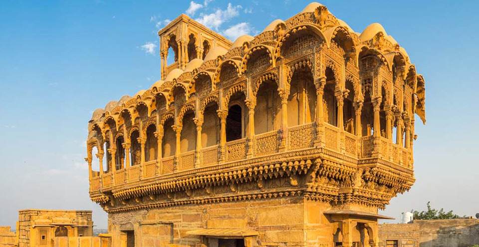
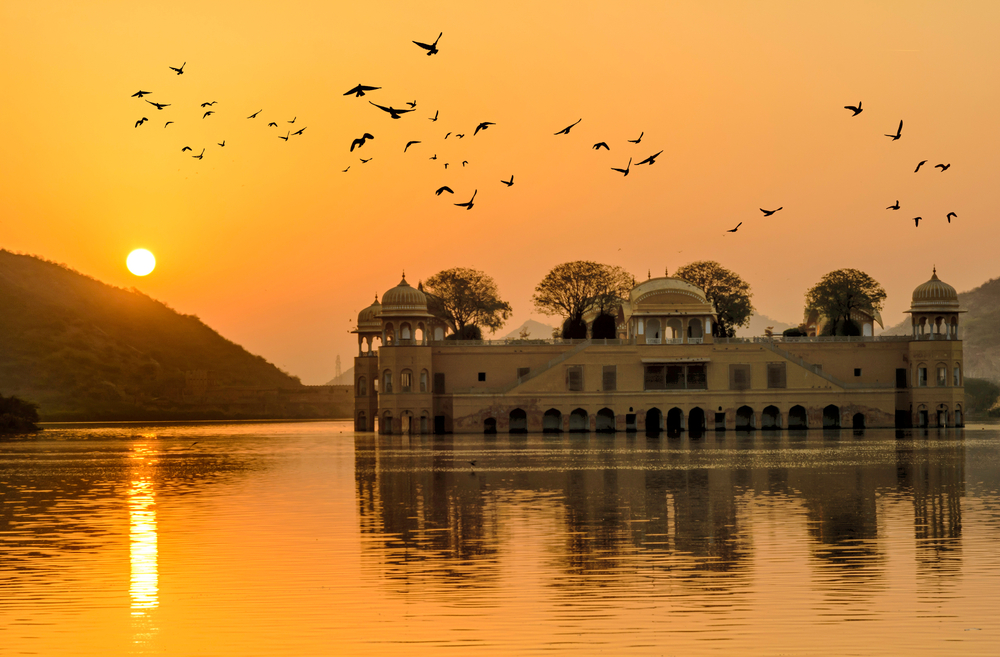
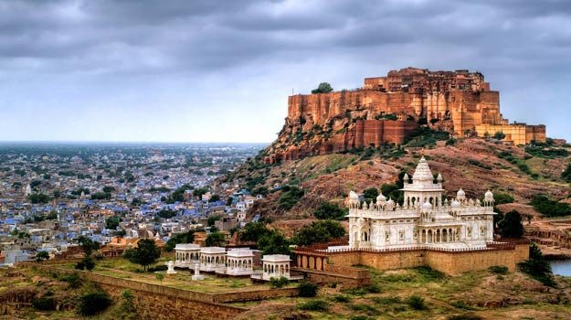
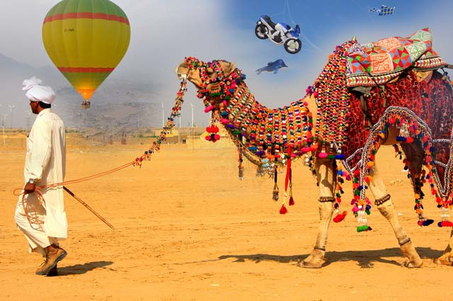
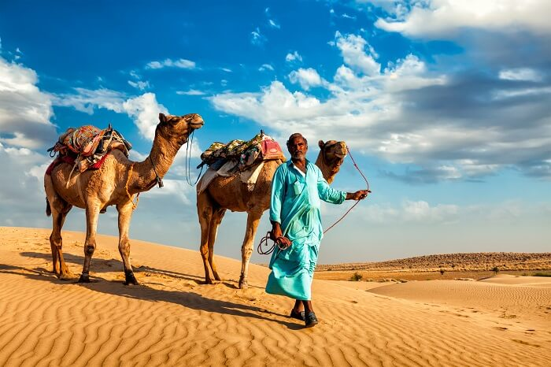
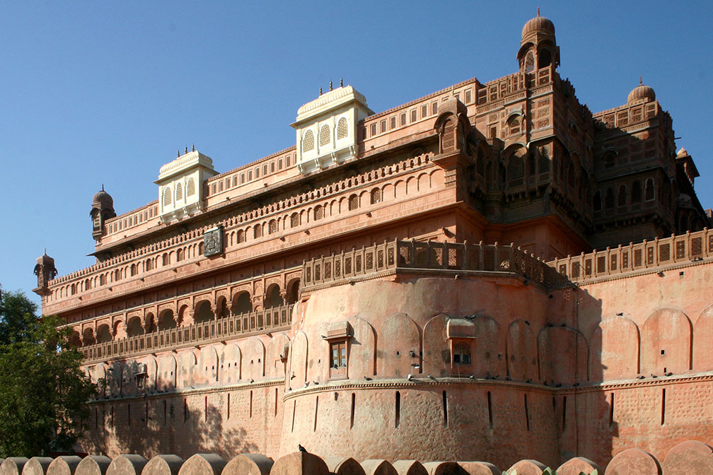
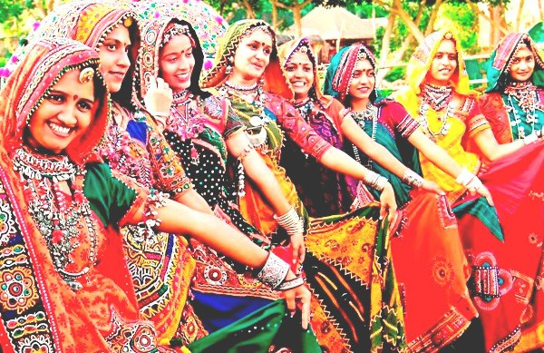
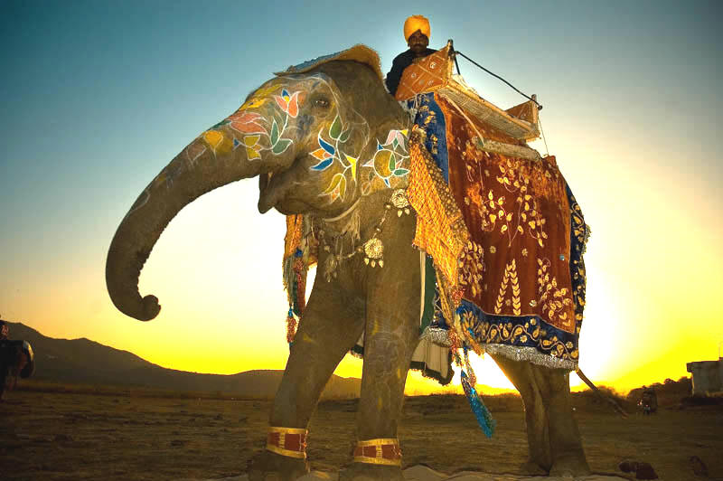

Rajasthan which is also known as the “Land of Maharajas” is the largest state of India, covering an area of about 342,239 sq. km. It comprises of 33 districts and its largest city is Jaipur, which is also its capital. Being located on the western side of the country, it shares its border with Pakistan to its northwest and to the west it shares its border with Sindh. To its north it has Punjab, Uttar Pradesh and Haryana to its northeast; to its southeast it has Madhya Pradesh and Gujarat to its southwest. The glory of the state is retained by its majestic palaces, forts and monuments. The vibrant culture and rich heritage of this princely state draw innumerable tourists from across the globe.
Rajasthan has a tradition of highly cultivated music & dance forms. The music is uncomplicated, raw and songs depict daily chores. The Kalbeliya dance of Jaisalmer and Ghoomar dance from Udaipur have gained recognition internationally. Folk music is an integral part of Rajasthani culture. Ballads, Bhopas relate heroic deeds, love stories through folk songs. Bhajans and Banis with folk music instruments give it distinct taste. Rajasthan is also famous for textiles, semi-precious stone work and its traditional & colorful handicrafts. Rajasthan is also one of the cultural centre for miniature painting art with its unique rajasthani or Rajputana school of painting. The painting form is well diverse with multiple schools like Mewar, Marwar, Hadoti, Dundhaar and even more styles of painting.